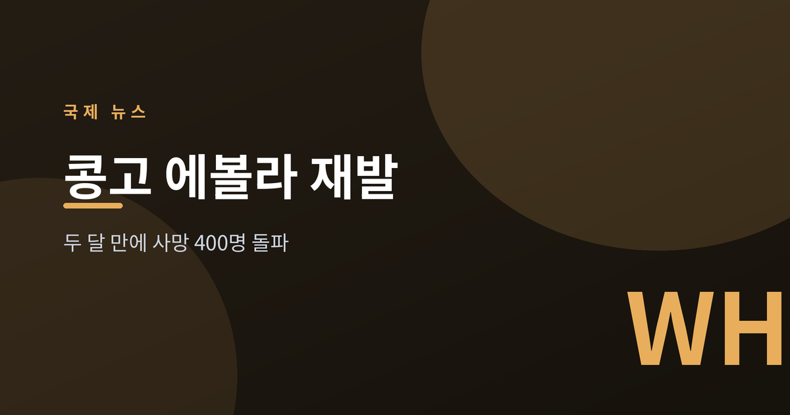
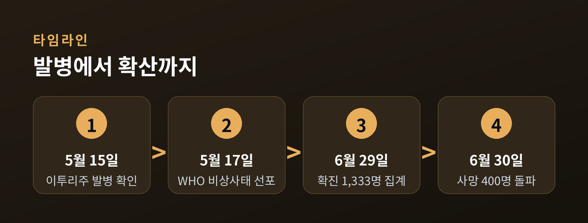
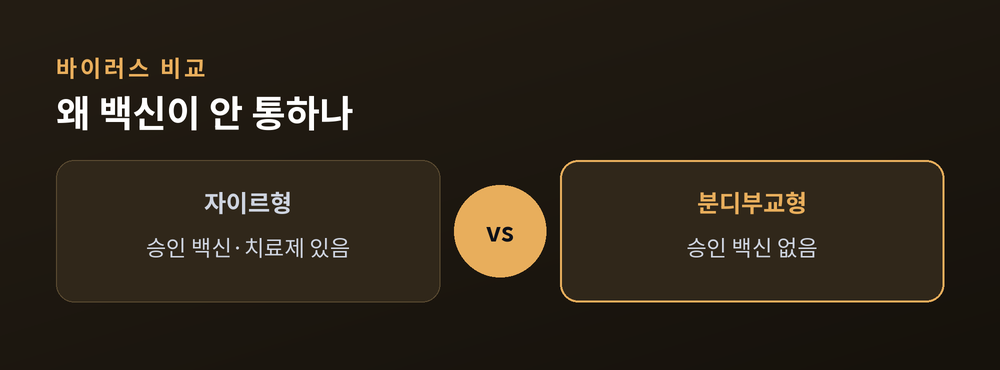
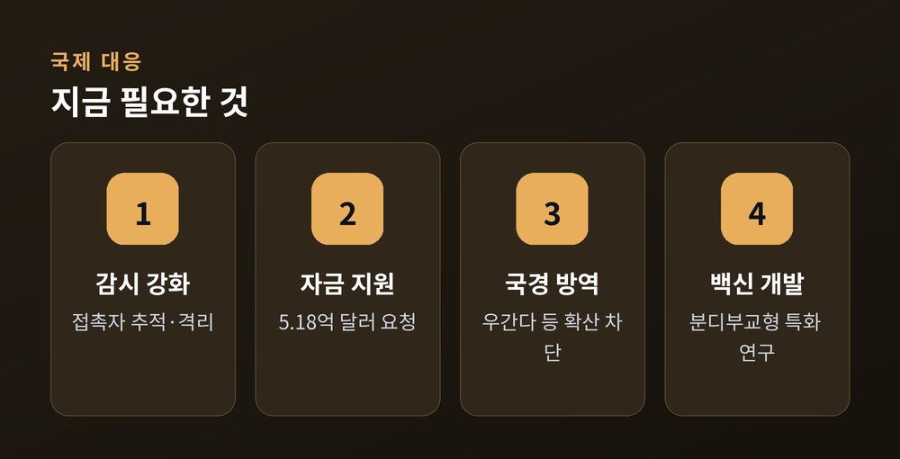

두 달 만에 사망 400명 넘긴 2026년 발병

콩고민주공화국(DR콩고)에서 에볼라가 다시 번지고 있다. 2026년 5월 발병이 확인된 지 두 달도 되지 않아 사망자는 400명을 넘어섰다. 이번 유행이 특히 까다로운 이유는 기존 백신이 듣지 않는 바이러스 종류라는 점이다.
DR콩고 보건 당국은 2026년 5월 15일 동북부 이투리주에서 에볼라 발병을 공식 확인했다. 이 나라에서 기록된 17번째 에볼라 유행이다. 세계보건기구(WHO)는 이틀 뒤인 5월 17일 이번 사태를 국제적 공중보건 비상사태(PHEIC)로 선포했다 (출처: WHO).
확산 속도는 가팔랐다. DR콩고 국립공중보건연구소 집계에 따르면 6월 29일 기준 확진 1,333명·사망 399명이 보고됐고, 6월 30일에는 사망자가 400명을 넘어섰다 (출처: 알자지라·WHO 발병 소식지). 확진 규모는 1,300명대로, 역대 에볼라 유행 중 세 번째로 큰 축에 든다. 발병 후 250명 사망까지 37일이 걸렸는데, 2014~2016년 서아프리카 대유행 때 같은 규모에 78일이 걸린 것과 비교하면 초기 확산이 훨씬 빨랐다 (출처: 미국 질병통제예방센터·CDC). 발병은 이투리주에서 시작해 북키부·남키부주로 번졌고, 인접국 우간다에서도 확진 20명·사망 2명이 확인됐다 (출처: WHO, 6월 30일 기준).

이번 유행의 핵심 변수는 바이러스 종류다. 원인 병원체는 '분디부교(Bundibugyo) 에볼라바이러스'로, 2007년 우간다에서 처음 확인된 종이다. 문제는 지금까지 승인된 에볼라 백신·치료제가 대부분 다른 종인 '자이르 에볼라바이러스'를 겨냥해 만들어졌다는 점이다. 즉 분디부교형에 대해서는 정식 승인된 백신이나 치료제가 없다 (출처: 국경없는의사회·MSF).
기존 백신 '에르베보(Ervebo)'가 대안이 될 수 있는지도 검토됐다. 그러나 WHO는 5월 28일, 에르베보가 분디부교형에 교차 방어 효과를 낸다는 근거가 매우 제한적이라며 통제된 연구 환경 밖에서 프로그램 방식으로 사용하는 것은 권고하지 않는다고 밝혔다 (출처: WHO). 결국 감시·접촉자 추적·환자 격리·감염 예방 같은 전통적 방역이 다시 최전선에 서게 됐다.
여건은 좋지 않다. 발병 지역인 콩고 동부는 무장 충돌과 주민 이동, 의료시설 공격이 겹쳐 접촉자 추적과 격리가 사실상 어려운 상황으로 전해진다 (출처: 유엔뉴스). 감염병 통제의 기본기가 흔들리면 확산은 더 길어진다.

국제사회의 대응은 시작됐다. 아프리카질병통제예방센터(Africa CDC)와 WHO는 6월 5일 대륙 차원의 에볼라 대비·대응 계획을 내놓으며 5억 1,800만 달러 규모의 지원을 요청했다 (출처: WHO). 다만 자금은 크게 부족하다. 합의된 대응 예산 상당 부분이 확보되지 못한 것으로 전해지며, WHO 아프리카 비상대응 책임자는 현재 국제 대응 수준을 필요치의 "10점 만점에 3~4점"이라고 평가했다 (출처: WHO 관계자 발언 인용).

전문가들은 이번 유행을 통제하는 데 앞으로 수개월이 더 걸릴 수 있다고 본다. 승인된 백신이 없는 만큼, 단기적으로는 감시망 강화와 국경 방역, 지역사회 신뢰 회복이 확산을 늦출 핵심 수단으로 꼽힌다. 중장기적으로는 분디부교형에 특화된 백신·치료제 개발과 광범위 필로바이러스 백신 연구가 과제로 남았다.
수치는 시점에 따라 계속 바뀐다. 사망자·확진자 규모는 당국 발표 시점마다 갱신되므로, 최신 정보는 WHO와 각국 보건 당국의 공식 집계를 확인하는 것이 정확하다. 공포보다 필요한 것은 정확한 정보와 꾸준한 방역 자원이다. 이번 유행은 백신 하나로 해결되지 않는, 보건 체계와 국제 협력의 시험대에 가깝다.